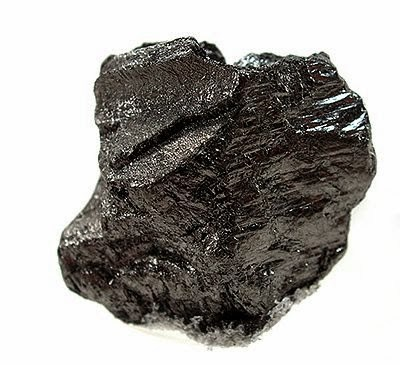
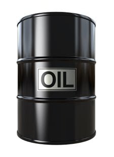
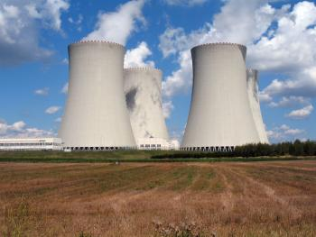
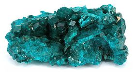

Los recursos no renovables se consideran reservas por que existe una cantidad finita de ellos, no se regeneran aunque pueden ser producto de procesos biologicos de otras epocas, como el petroleo, para cuya formacion se necesitan millones de años. La sobreexplotacion de los mismo da como resultado su agotamiento, esto ocasiona que las futuras generaciones ya no dispongan de ellos.
En pocas palabras, se han catalogado como recursos no renovables a todos los recursos que se obtienen de la naturaleza y que no se logran o que su recuperacion es muy limitada.
Estos son los recursos indispensables para la vida contidiana pues en la actualidad la vida moderna de nuestra sociedad no puede sobrevivir sin estos recursos, pues con ellos se pueden resolver las necesidades industriales, medicas y tambien las inclemencias del clima, como inviernos o veranos extremos.
Estos recursos consisten principalmente productos de la naturaleza que consumimos y que por razones de naturaleza no pueden regenerarse en un lapso corto o simplemente no pueden volver a regenerarse.
En este tipo de recursos se encuentran los siguientes:
Carbon Mineral
El carbon mineral es un recurso no renovable, debido a que este se formo en la epoca prehistorica, ademas se tiene la idea de que se formo en grandes incendios donde se quemaron millones de kilometros de bosques y que al quedar presionados por el peso de la presion de la tierra y tocas se compacto produciendo que el carbon vegetal se mineralice, siendo un mineral que se encuentra imposibilitado de reproducirse, pues las condiciones de su creacion son actualmente imposibles de reproducir para la formacion de carbon mineral nuevo, tanto en tiempo como en condiciones atmosfericas y terrestres

Petroleo
El petroleo es un recurso no renovable que se obtiene del subsuelo, consiste en un fluido que se ha clasificado en dos tipos:

El petroleo es un recurso que se tiene la idea de que se formo por millones de microorganismos prehistoricos, tal vez plancton que por efecto de la presion atmosferica y una temperatura geotermica de la formacion del planeta se fueron formanto hasta obtener el combustible actual.
Por elevada temperatura y el tiempo que se necesito para producirlo se tiene la firme conciencia de que no se puede reproducir por ningun proceso artificial y menos en un tiempo aceptable para poder utilizarlo.
Energia Nuclear
La energia nuclear se produce mediante ciertos minerales que despues de un proceso de enriquecimiento (en el caso del uranio) producen una fuerza energetica al romper los atomos, lo que produce energia y mucho calor.

Al ser una energia producida por la liberacion de reaccion y mediante un elemento quimico y a la vez un mineral que no puede producirse, tiene graves daños secundarios que a la fecha no se conocen del todo y no puede volverse a generar.
Minerales
Los minerales son productos quimicos que se encuentran en la naturaleza y que no pueden reproducirse o crearse, los que estan son los unicos que existen y basandonos en la ley cientifico-positiva de que la materia no se crea ni desaparece, sino que se transforma, los minerales al no poderse crear por el ser humano, son productos que no se pueden crear y por ende no son renovables
